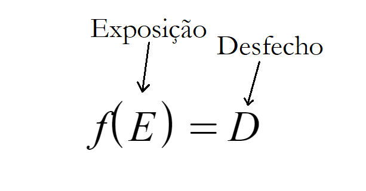

O estudo é experimental e transversal.
O estudo é observacional descritivo.
O estudo é observacional analítico e de caráter cronológico transversal.
O estudo é observacional analítico e de caráter cronológico longitudinal.
O estudo NÃO é experimental, uma vez que não haverá intervenção dos pesquisadores sobre a amostra; o estudo é, portanto, observacional. O que quero dizer com intervenção? Qualquer ação que não seja a observação. Ainda não entendi. Quero um exemplo.
Além disso, ao afirmarmos que haverá acompanhamento de 10 anos, estamos constatando a longitudinalidade do estudo. Estudo longitudinal é aquele que se arrasta no tempo; o transversal, aquele muito curto, quase uma "foto" da realidade. Ainda não entendi. Desenha.
[Fechar]
Imagine um estudo onde se deseja saber a eficácia de um fármaco no tratamento de alguma doença. Um grupo de pessoas com a doença irá tomar o medicamento (administrado pelos pesquisadores); já o outro grupo, irá ingerir um placebo. Perceba que os pesquisadores agiram diretamente sobre a amostra (os participantes). Isso é característico de estudo experimental -- no caso, o estudo experimental seria um ensaio clínico controlado. Em um estudo epidemiológico observacional o pesquisador, como o nome sugere, apenas observa... nada mais.
[Fechar]
O estudo é, de fato, observacional -- i. e. os pesquisadores não atuam diretamente sobre a amostra; apenas observam-na. Não é, porém, descritivo. Enquanto estudos descritivos apenas transcrevem a observação (relatos de caso e série de casos), estudos analíticos procuram correlacionar a observação a alguma hipótese, que é o caso do estudo em questão. A saber, os estudos observacionais analíticos foram o foco da matéria de PR1.
Conte-me mais.
[Fechar]
Enquanto a lógica do estudo observacional descritivo é "Esse paciente apresentou tais sintomas... vou escrever o que estou observando. Não estou nem aí para o que causou ou deixou de causar.", a lógica do estudo observacional analítico é "Será que um certo fenômeno tem correlação com algum outro? Vou observar ambos e, assim, confirmarei ou descartarei minha hipótese. Um dos fenômenos eu chamarei de desfecho (aquele conhecido como variável dependente ou de resposta), o outro eu chamarei de exposição (a variável explanatória ou independente)."
Caso algum de vocês seja familiarizado com a linguagem matemática, podemos condensar o que acabei de falar na seguinte expressão:

[Fechar]
O estudo está corretamente categorizado quanto às suas características observacionais e analíticas. O problema está no aspecto cronológico: se trata de um estudo longitudinal, não transversal.
Leia a resposta da alternativa A e retorne aqui para responder as seguintes perguntas:
Dê exemplos de estudos longitudinais retrospectivos, longitudinais prospectivos e estudos transversais:
Não sei nem por onde começar.
[Fechar]
Sério?
S N
Corretíssimo! Abrir outras respostas para mais opções e esclarecimentos.
[Fechar]